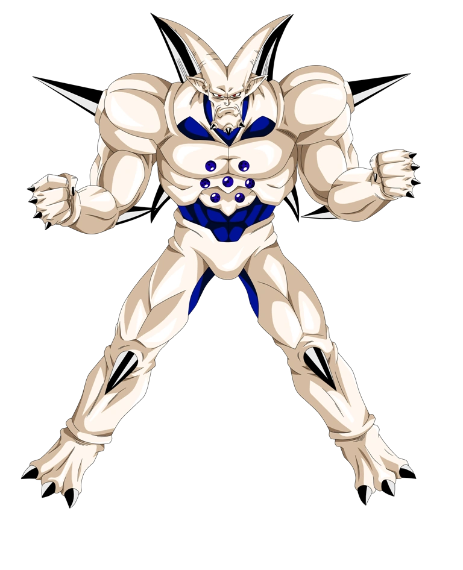

Bad Ending

Al preguntar a Kamisama donde estaba la esfera, aparece Omega Shenlong teniendo él mismo en su cuerpo las 7 esferas del dragón incluyendo la última que te faltaba.
Oficialmente estás acabado, quizá debas obtener la esfera antes que el dragón maligno. Fin del trayecto.
Volver